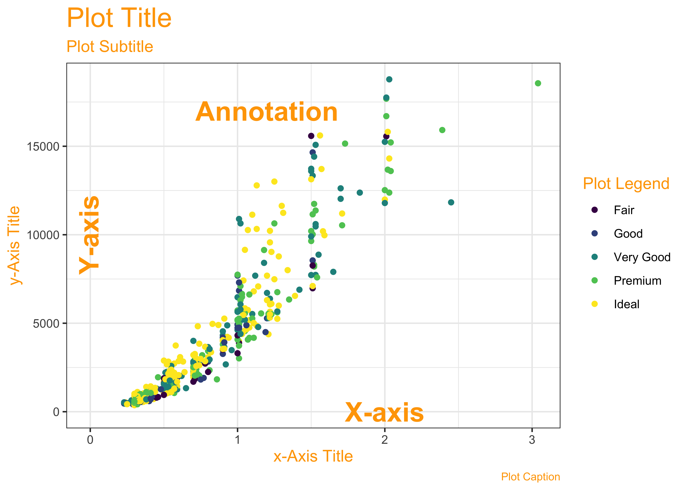

| No | Pronoun | Answer | Variable/Scale | Example | What Operations? |
|---|---|---|---|---|---|
| 1 | How Many / Much / Heavy? Few? Seldom? Often? When? | Quantities, with Scale and a Zero Value.Differences and Ratios /Products are meaningful. | Quantitative/Ratio | Length,Height,Temperature in Kelvin,Activity,Dose Amount,Reaction Rate,Flow Rate,Concentration,Pulse,Survival Rate | Correlation |
| 2 | How Many / Much / Heavy? Few? Seldom? Often? When? | Quantities with Scale. Differences are meaningful, but not products or ratios | Quantitative/Interval | pH,SAT score(200-800),Credit score(300-850),SAT score(200-800),Year of Starting College | Mean,Standard Deviation |
| 3 | How, What Kind, What Sort | A Manner / Method, Type or Attribute from a list, with list items in some " order" ( e.g. good, better, improved, best..) | Qualitative/Ordinal | Socioeconomic status (Low income, Middle income, High income),Education level (HighSchool, BS, MS, PhD),Satisfaction rating(Very much Dislike, Dislike, Neutral, Like, Very Much Like) | Median,Percentile |
| 4 | What, Who, Where, Whom, Which | Name, Place, Animal, Thing | Qualitative/Nominal | Name | Count no. of cases,Mode |
🕶 Lab-1: Science, Human Experience, Experiments, and Data
Why do we visualize data
Slides and Tutorials
Where does Data come from?
We will need to form a basic understanding of basic scientific enterprise. Let us look at the slides.
Why Visualize?
- We can digest information more easily when it is pictorial
- Our Working Memories are both short-term and limited in capacity. So a picture abstracts the details and presents us with an overall summary, an insight, or a story that is both easy to recall and easy on retention.
- Data Viz includes shapes that carry strong cultural memories and impressions for us. These cultural memories help us to use data viz in a universal way to appeal to a wide variety of audiences. (Do humans have a gene for geometry?)
- It helps sift facts and mere statements: for example:


In more detail:
How do we Spot Data Variable Types?
By asking questions!
As you go from Qualitative to Quantitative data types in the table, I hope you can detect a movement from fuzzy groups/categories to more and more crystallized numbers.

Each variable/scale can be subjected to the operations of the previous group. In the words of S.S. Stevens
the basic operations needed to create each type of scale is cumulative: to an operation listed opposite a particular scale must be added all those operations preceding it.
What Are the Parts of a Data Viz?

How to pick a Data Viz?
Most Data Visualizations use one or more of the following geometric attributes or aesthetics. These geometric aesthetics are used to represent qualitative or quantitative variables from your data.

What does this mean? We can think of simple visualizations as combinations of these aesthetics. Some examples:
| Aesthetic #1 | Aesthetic #2 | Shape |
|---|---|---|
| Position X = Quant Variable | Position Y = Quant Variable | P oints/Circles with Fixed Size |
| Position X = Qual Variable | Position Y = Count of Qual Variable | Columns |
| Position X = Qual Variable | Position Y = Qual Variable | Rectangles, with area proportional to joint(X,Y) count |
| Position X = Qual Variable | Position Y = Rank-Ordered Quant Variable | Box + Whisker, Box length proportional to I nter-Quartile Range, w hisker-length proportional to upper and lower quartile resp. |
| Position X = Quant Variable | Position Y = Quant Variable + Qual Variable |
Line and Area Colour for Area |